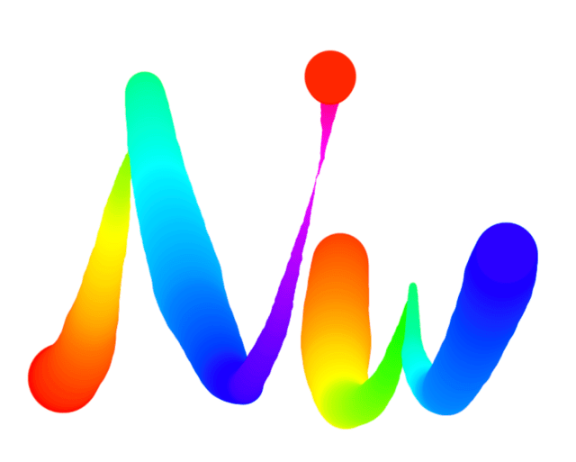

【JS30】Fun With Html5 Canvas
08 — Fun with HTML5 Canvas

主題
使用HTML5的Canvas來製作一個畫布，
透過滑鼠來繪製彩色粗細不一的線條～
步驟
Step1
先在HTML的地方建立一個<canvas>的區塊，
只有width、height兩種屬性，
並設置一個變數 ctx 作為 canvas 的操作元素，
1 | const ctx = canvas.getContext(‘2d’) |
getContext用來取得渲染環境
設定顏色strokeStyle、樣式lineJoin、lineCap、lineWidth…
Step2
接著設定變數各種待會會應用到的變數
1 | const canvas = document.querySelector('#draw'); |
Step3
寫function來執行畫圖！
1 | function draw(e) { |
Step4
接著設定滑鼠對應的addEventListener效果
1 | // 當滑鼠按下時，將目前滑鼠的位置設定為變數中的X、Y並讓isDrawing為true |
Javascript語法&備註
direction = !direction
學到的是透過這個方式來做true/false的切換。
HTML5語法&備註
這篇幾乎都是使用到canvas的功能，
紀錄若要製作像這樣的畫布效果在canvas中的使用順序：
- 定義線條樣式
(1) strokeStyle線條顏色
(2) lineWidth線條寬度
(3) lineJoin線條的轉角樣式
(4) lineCap線條的結束樣式 - 移動順序
(1) beginPath()開啟一個新的繪製路徑
(2) moveTo()將繪製路徑的起點移動到指定的座標中
(3) lineTo()連接路徑終點到指定的座標中
(4) stroke()繪製路徑
- Post title：【JS30】Fun With Html5 Canvas
- Post author：Neil Yang
- Create time：2019-05-16 00:00:00
- Post link：https://des86532.github.io/2019/05/16/JS30/JS30-fun-with-html5-canvas/
- Copyright Notice：All articles in this blog are licensed under BY-NC-SA unless stating additionally.